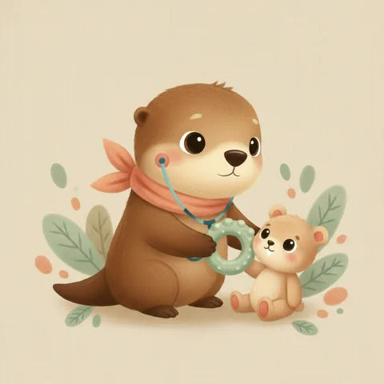

Ebeveynler için · Rehber
Bebeklerde diş çıkarma: ateş yapar mı, gece ağlamaları neden?
İlk diş, hem bebek hem ebeveyn için yeni bir dönem. Biraz huzursuzluk olabilir; ama diş çıkarma bir hastalık değil, doğal bir gelişim basamağıdır. Bu sayfanın en önemli cümlesi şu: diş çıkarma ateş yapmaz — ve bunu bilmek, gerçek bir enfeksiyonun gözden kaçmasını önler.
Diş çıkarma ateş yapar mı?
Hayır. Bu, muayenede en sık düzelttiğimiz yanlış inanç ve zararsız bir yanlış değil.
Binlerce bebeğin gün gün izlendiği çalışmalar tutarlı biçimde şunu gösteriyor: diş çıkarma vücut ısısında çok küçük bir artışa yol açabilir — ortalama 0,1–0,2 °C — ve bu artış 38 °C'nin altında kalır. Yani "dişten ateşlendi" dediğimiz tablo, ölçüldüğünde ateş değildir.
Kural basit
Diş çıkaran bir bebekte 38 °C ve üzeri ateş varsa, sebebi diş değildir. O ateşin başka bir sebebi vardır ve ayrıca değerlendirilmelidir. Diş çıkarma, aynı anda var olan bir enfeksiyonu maskelemez — sadece bizim dikkatimizi dağıtır.
Bu neden önemli? Çünkü ateşi dişe bağlayıp beklemek, orta kulak enfeksiyonu, idrar yolu enfeksiyonu veya boğaz enfeksiyonu gibi tedavi gerektiren durumların tanısını günlerce geciktirebiliyor. Özellikle idrar yolu enfeksiyonu bebeklerde tek bulgu olarak ateşle gidebilir — dışarıdan hiçbir şey göstermez. "Zaten diş çıkarıyordu" cümlesi, o bebeği geç getirten en yaygın sebeplerden biri.
Ateşin nasıl ölçüleceği, evde ne yapılacağı ve hangi belirtilerin beklemeye gelmediği için: Gece ateş çıktı — ne zaman gelmeliyiz?
Diş çıkarma gerçekte ne yapar, ne yapmaz
Diş çıkarmaya yakıştırılan belirtilerin çoğu aslında ona ait değil. Ayrım şöyle:
| Belirti | Dişe bağlanır mı? | Açıklama |
|---|---|---|
| Salya artışı | Evet | En tipik bulgu. Çene, boyun ve göğüste salya pişiğine yol açabilir. |
| Her şeyi ısırma, kaşıma isteği | Evet | Diş etine basınç rahatlama sağladığı için bebek ısırmak ister. |
| Diş etinde kızarıklık, hafif şişlik | Evet | Dişin çıkacağı noktada sınırlıdır. |
| Huzursuzluk, mızmızlık | Evet | Genellikle dişin ucu görünmeden 1–3 gün önce başlar, çıkınca geçer. |
| Uykuda geçici bozulma | Evet | Birkaç gece sürer. Haftalarca süren uyku sorunu dişe bağlanmaz. |
| İştahta geçici azalma | Evet | Emme diş etine basınç yaptığı için bebek biberonu/memeyi reddedebilir. |
| Vücut ısısında çok hafif artış | Evet | Ama 38 °C'nin altında. Bu "ateş" değildir. |
| 38 °C ve üzeri ateş | Hayır | Başka bir sebep aranmalıdır. |
| İshal | Hayır | Yaygın inanışın aksine diş ishal yapmaz. Bkz. ishal ve kusma rehberi. |
| Kusma | Hayır | Ayrıca değerlendirilmelidir. |
| Vücutta döküntü | Hayır | Çene ve göğüsteki salya pişiği dışında. |
| Öksürük, burun akıntısı | Hayır | Eş zamanlı bir viral enfeksiyondur. |
| Kulak enfeksiyonu | Hayır | Bebek kulağını çekiyor + ateşi varsa kulak muayene edilmelidir. |
| Havale | Hayır | Acil değerlendirme gerekir. |
Peki neden tam da bu dönemde hastalanıyorlar?
Ebeveynlerin gözlemi yanlış değil — diş çıkarma dönemi gerçekten hastalıklı geçiyor. Ama sebep diş değil, zamanlama. Aynı aylarda üç şey birden oluyor:
Anne antikorları azalıyor
Gebelikte plasenta yoluyla geçen koruyucu antikorlar 6. ay civarında belirgin biçimde azalır. Bebek, hayatının ilk gerçek enfeksiyonlarıyla tam da bu dönemde tanışır.
Her şey ağza gidiyor
Diş eti kaşındığı için bebek eline geçen her şeyi ısırır. Bu, mikropla tanışmanın en hızlı yolu — ve tam olarak diş çıkarmayla aynı döneme denk gelir.
Sosyal hayat başlıyor
Çoğu aile 6–12. ayda kreşe ya da bakıcıya başlar, misafirlik artar. Enfeksiyonla karşılaşma sıklığı bir anda katlanır.
Yani diş çıkarma ile hastalık aynı anda oluyor, biri diğerine yol açmıyor. İstatistikte buna "birliktelik nedensellik değildir" denir; pediatride ise şu anlama gelir: her belirtiyi ayrı değerlendirin.
Gece ağlamaları: neden geceleri daha kötü?
Bu, sorulan en gerçek sorulardan biri — ve cevabı var:
- Gündüz dikkat dağılır, gece dağılmaz. Oyun, ses, ışık ve hareket gündüz rahatsızlığı örter. Gece bu uyaranlar kalkınca diş eti rahatsızlığı sahneye tek başına çıkar.
- Yatar pozisyon. Sırtüstü yatarken baş bölgesine kan akımı artar; iltihaplı diş etinde basınç ve zonklama hissi çoğalır. Aynı sebeple kulak enfeksiyonları da geceleri kötüleşir.
- Yorgunluk eşiği düşürür. Gün boyu rahatsızlıkla baş etmiş bir bebeğin tahammülü akşama doğru azalır.
Ne kadar sürer?
Diş çıkarmaya bağlı gece huzursuzluğu her diş için birkaç gece sürer ve dişin ucu diş etinden göründükten sonra hızla geçer. Haftalarca süren, giderek kötüleşen ya da bebeğin hiç teselli edilemediği bir gece huzursuzluğu diş çıkarmaya bağlanmamalıdır — özellikle ateş eşlik ediyorsa.
Geceyi kolaylaştırmak için
- Yatmadan önce diş etine temiz parmakla bir dakika nazik masaj.
- Buzdolabında soğutulmuş (dondurulmamış) kaşıyıcıyı yatmadan kısa süre önce verin.
- Salyayı silip çene bölgesini kuru tutun; ıslak kalan cilt geceleri daha çok kaşınır.
- Rutini bozmayın. Zor bir gecede kurulan yeni alışkanlıklar (ör. kucakta uyutma, gece biberonu) diş geçtikten sonra kalıcı hale gelebilir.
- Bebeğiniz gerçekten ağrılıysa, hekiminizin kiloya göre verdiği dozda parasetamol uygun bir seçenektir. Doz yaşa değil kiloya göredir.
Ne zaman, hangi sırayla çıkar?
İlk diş genellikle 6 ay civarında çıkar, ama 4–12 ay arası geniş bir aralık tamamen normaldir. Erken ya da geç çıkması tek başına bir sorun değildir; bazı bebekler doğduğunda dişlidir, bazıları ilk yaşını dişsiz karşılar. Sıra, zamanlamadan daha tutarlıdır:
| Diş | Genellikle | Not |
|---|---|---|
| Alt orta kesiciler | 6–10 ay | Genellikle ilk çıkan çift |
| Üst orta kesiciler | 8–12 ay | Sıklıkla ikinci sırada |
| Üst yan kesiciler | 9–13 ay | |
| Alt yan kesiciler | 10–16 ay | |
| Birinci azılar | 13–19 ay | Yüzeyi geniş olduğu için en zorlu dönem |
| Köpek dişleri | 16–22 ay | |
| İkinci azılar | 25–33 ay | 20 süt dişi tamamlanır |
Dişler genellikle çift çift ve simetrik çıkar. Tek taraflı, belirgin asimetrik bir çıkış ya da 18. aya kadar hiç diş olmaması bir kez değerlendirilmelidir.
Doğuştan diş (natal diş)
Nadiren bebek bir veya iki dişle doğar ya da ilk ay içinde diş çıkarır. Çoğu zaman sorun değildir; ancak diş çok oynaksa düşüp soluk borusuna kaçma riski taşıdığı için ve emzirme sırasında meme ucunu yaraladığı için değerlendirilmesi gerekir. Karar, dişin sağlamlığına göre verilir.
Nasıl rahatlatabilirsiniz?
Diş çıkarmanın tedavisi yok — amaç birkaç günü rahat geçirmek. İşe yarayanların ortak noktası soğuk ve basınç:
Soğutulmuş diş kaşıyıcı
Buzdolabında soğutulmuş, dondurulmamış temiz bir kaşıyıcı. Donmuş sert bir cisim diş etini zedeler. İçi sıvı dolu kaşıyıcılar delinip sızabildiği için tek parça katı silikon tercih edilmeli.
Diş eti masajı
Temiz parmakla veya temiz ıslak gazlı bezle nazik ama belirgin basınç. Çoğu bebeğin en çok işine yarayan yöntem budur ve maliyeti yoktur.
Soğuk ıslak bez
Temiz bir bezin ucunu ıslatıp buzdolabında soğutun. Bebek hem ısırır hem emer. Gözetim altında verin.
Soğuk yiyecek (6 ay+)
Ek gıdaya başlamış bebekte soğutulmuş kaşık, soğuk yoğurt ya da file içinde soğuk meyve. Boğulma riskine karşı daima gözetim altında ve bebek oturur pozisyonda.
Salyayı kurulayın
Çene ve boyun kıvrımını gün içinde sık sık kurulayın; gerekiyorsa bariyer etkili bir nemlendirici kullanın. Salya pişiği rahatsızlığı ikiye katlar.
Kucak ve sakinlik
Klişe ama doğru: temas, ağrı algısını gerçekten azaltır. Huzursuz bir bebeğe en çok iyi gelen şey sakin bir yetişkindir.
Kesinlikle kaçının
- Benzokain / lidokain içeren uyuşturucu diş eti jelleri. 2 yaş altında kullanılmamalıdır. Nadir ama hayatı tehdit eden methemoglobinemi tablosuna yol açabilir; ayrıca yutma refleksini geçici olarak baskılayarak boğulma riski yaratır.
- Kehribar diş çıkarma kolyeleri ve bileklikleri. Ağrıyı azalttığına dair hiçbir kanıt yok; buna karşılık boğulma ve kopan boncuğun soluk borusuna kaçması riski gerçek ve ölümcül vakalar bildirilmiş. Bebeğin boynuna hiçbir şey takılmamalı.
- Bal. Diş etine sürmek yaygın ama 1 yaş altında bebek botulizmi riski taşır. Ayrıca diş çürüğü başlatır.
- Rakı, kolonya, alkollü karışımlar. Diş etine sürülen alkol bebekte emilir; küçük miktarlar bile kan şekerini düşürebilir ve zehirlenmeye yol açabilir.
- Dondurulmuş sert cisimler. Diş etini ve yeni çıkan dişi zedeler.
- Homeopatik diş çıkarma tabletleri. İçerik denetimi güvenilir değildir; belladona içeren ürünlerde ciddi yan etkiler bildirilmiştir.
- Ateşi ya da genel durum bozukluğunu dişe bağlayıp beklemek. Bu listedeki en sık ve en zararlı hata.
Diş etindeki mavimsi şişlik: diş çıkarma kisti
Bazen dişin çıkacağı yerde mavi-mor renkli, yumuşak bir kabarcık görürsünüz. Buna diş çıkarma kisti (erüpsiyon hematomu) denir: dişin üzerindeki dokuda küçük bir kanama birikimidir.
Görüntüsü ailelere korkutucu gelir ama neredeyse her zaman zararsızdır ve diş çıktığında kendiliğinden kaybolur. Müdahale, delme veya boşaltma gerektirmez. Şişlik hızla büyüyorsa, çevresine yayılıyorsa veya ateş eşlik ediyorsa gösterilmesi gerekir.
İlk diş çıkınca: bakım hemen başlar
Süt dişleri "nasıl olsa düşecek" diye ihmal edilmemeli. Çürüyen bir süt dişi ağrı yapar, çiğnemeyi bozar ve altından gelecek kalıcı dişin yerini ve sağlığını etkiler.
- İlk diş göründüğü gün fırçalama başlar. Günde iki kez, yumuşak bebek diş fırçasıyla — biri mutlaka gece yatmadan önce.
- Florürlü diş macunu, ilk dişten itibaren pirinç tanesi kadar miktarda önerilir; 3 yaşından sonra bezelye büyüklüğüne çıkar. Macunun florür içeriği için hekiminize danışın.
- Gece biberonla uyutmayın. Uykuda tükürük akışı azalır; ağızda kalan süt veya meyve suyu ön dişlerde hızlı ilerleyen çürüğe yol açar. Bu, Türkiye'de en sık gördüğümüz erken çocukluk çürüğü sebebi.
- Biberona bal, pekmez, şeker katmayın; emziği tatlıya batırmayın.
- İlk diş hekimi ziyareti: ilk diş çıktıktan sonraki 6 ay içinde, en geç 1 yaşında. Amaç tedavi değil, çürük riskini erken görmek.

Diş buğdayı (hedik) geleneği
Anadolu'da ilk diş çıktığında haşlanmış buğday kaynatılıp komşulara dağıtılır; yöreye göre hedik, diş bulguru ya da diş hediği denir. Güzel bir gelenek ve sürdürmemek için hiçbir sebep yok — sadece iki güvenlik notu:
- Haşlanmış buğday taneleri, leblebi, fındık ve nohut bebek için boğulma riski taşır. Kutlamanın bebeğe ikram edilen kısmı olmamalı; bebek yalnızca seyretsin.
- Geleneğin şekerli ikramlarını (lokum, şekerleme) bebekten uzak tutun — yeni çıkmış bir dişin çürükle tanışması için erken.
Ne zaman hekime başvurun?
- 38 °C ve üzeri ateş — dişe bağlamayın, ayrı değerlendirilmeli.
- İshal, kusma ya da genel durumda bozulma.
- Bebeğin teselli edilememesi, saatlerce süren ağlama.
- Kulağını çekmesi, özellikle ateşle birlikte.
- Diş etinde belirgin şişlik, iltihap görünümü, kötü koku.
- Beslenmeyi ciddi biçimde reddetme, kilo kaybı.
- 18. aya kadar hiç diş çıkmaması.
- Doğuştan gelen, oynak bir diş.